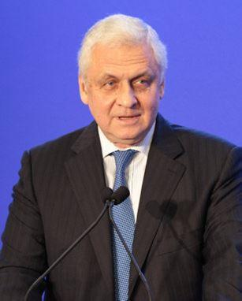
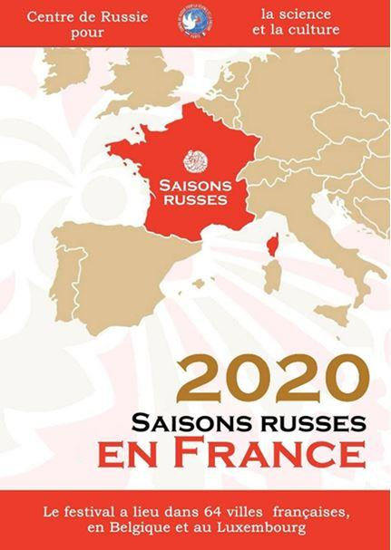

Manifeste pour une nouvelle alliance franco-russe (2nde partie)
par Raphaëlle AUCLERT
Les exemples de mésalliance républicaine ne manquent pas : les guerres « sous-traitées » à la France sous l’égide de l’OTAN au service exclusif des intérêts américains en Yougoslavie ou en Lybie, l’Union pour la Méditerranée de Sarkozy, les liaisons pour le moins envahissantes avec les monarchies du Golfe (Hollande ne décora-t-il pas le PDG de Qatar Airways de la Légion d’honneur en 2015 ?), etc.
Pourtant, si l’on se fie à l’adage « les alliances ne servent à rien si elles associent des impuissances, » le choix de la Russie s’impose de lui-même. En effet, elle est bel et bien une puissance avec des indicateurs économiques à faire pâlir d’envie bon nombre de pays de la « prospère » Union européenne : 5% de chômage, 562 milliards de dollars de réserves de change (à comparer aux 226 de l’Allemagne, 197 de la France et 177 du Royaume Uni), sixième PIB mondial et une dette publique qui s’élevait à 14% en 2018 (contre 98% pour la France !). Certes, l’économie russe souffre de sa grande dépendance aux matières premières (qui comptent, par exemple, pour 84% de ses exportations avec la France) et d’un développement insuffisant et inégalement réparti. Toutefois, le lancement par le Kremlin en 2018 d’un vaste programme d’investissements publics visant à moderniser les infrastructures du pays1 est un signal qui doit inspirer l’optimisme ; un premier bilan est attendu dans le courant de l’année 2020. De plus, contrairement à notre république qui donne sans compter à ses « chances pour la France », la Russie – et l’Union soviétique auparavant – a toujours vu sa chance, elle, dans l’éducation et l’innovation scientifique, comme en témoignent les technopôles d’Akademgorodok (datant de 1957 et doté récemment d’un parc technologique dédié aux technologies de l’information) et le centre de recherches de Skolkovo. Legs de la période soviétique, la population russe est bien formée et a donné une myriade d’éminents spécialistes tant dans les sciences, les lettres que les arts. Du reste, ce potentiel unique au monde n’a pas échappé aux Etats-Unis qui, après avoir critiqué pendant cinquante ans le modèle communiste comme inepte et dénué de toute valeur, se sont empressés, avec un parfait cynisme, de débaucher par chaires d’université entières les fleurons de ce même modèle.
Et puisque les alliances utiles se doivent d’être des synergies de puissances, gardons à l’esprit que la France est, elle aussi, un partenaire de choix pour la Russie. Outre la proximité culturelle évoquée plus haut, n’oublions pas que notre pays, par ses territoires hérités de son ancien empire colonial, est la deuxième puissance maritime au monde (avec ses 10,7 millions de kilomètres carrés de Zone économique exclusive, juste derrière les Etats-Unis), de surcroît dans des secteurs de l’océan Indien, de l’océan Atlantique ou du Pacifique sud où la Russie peut difficilement être présente et exercer son influence. Or, la puissance maritime est aujourd’hui plus que jamais déterminante, tant pour la maîtrise des échanges (90% d’entre eux sont opérés par la mer) et de ressources devenues de plus en plus rares, que pour y déployer sa puissance militaire. À cet égard, rappelons également que la France est la troisième des huit nations nucléaires mondiales et la première en Europe de l’ouest. Sur le plan technologique, la France se classait en 2018 à la deuxième place européenne et à la sixième place mondiale dans le dépôt de nouveaux brevets. Cet exploit mérite d’être salué dans le contexte de la vente à la découpe effrénée de tous nos fleurons nationaux par nos félonnes élites (Alstom, Latécoère, Technicolor pour ne citer que quelques-uns des récents scalps que ces dernières ont laissé les Américains prélever sur notre économie).
Notons en outre que la France dispose de pôles de recherches de renommée internationale, auxquels le Professeur Didier Raoult a récemment fait honneur en remportant une victoire décisive sur le coronavirus, à la barbe d’une communauté scientifique réduite à l’impuissance devant ce désastre. La vigueur technologique et scientifique française est donc un attrait considérable pour une Russie qui a fait de sa modernisation une priorité majeure et dispose elle-même d’un trésor de savoirs et de savants capables d’exploiter ces découvertes et de développer des collaborations fructueuses.
Réciproquement, la puissance française, envoyée en soins palliatifs depuis une bonne vingtaine d’années par les ardeurs mondialistes de nos dirigeants, aurait tout à gagner d’une interaction plus étroite avec la Russie. L’ex-ambassadeur russe à Paris et secrétaire général du dialogue de Trianon Alexandre Orlov le rappelait il y a peu : « Dans les domaines de l’espace, de l’énergie, notamment de l’énergie nucléaire, de l’aéronautique, de la biotechnologie, du numérique, des sciences fondamentales, de la médecine, la coopération avec la Russie peut permettre à la France de retrouver la souveraineté industrielle et technologique indispensable pour la souveraineté et l’indépendance politique, notamment vis-à-vis de Washington. »2
C’est précisément cette indépendance politique qui fait cruellement défaut à la France depuis 1945, et plus encore depuis 1949 et son adhésion à l’OTAN. Notre pays s’est alors mis dans la situation décrite par le juriste allemand Carl Schmitt : « Quand un peuple craint les tracas et le risque d’une existence politique, il se trouve tout simplement un autre peuple qui le décharge de ces tracas en assumant sa protection contre les ennemis extérieurs et par conséquent la souveraineté politique ; c’est alors le protecteur qui désigne l’ennemi en vertu de la corrélation constante entre protection et obéissance […] Protego ergo obligo, voilà le cogito ergo sum de l’État. »3
Il suffit de lire les écrits du politologue et conseiller de la Maison Blanche Zbigniew Brzeziński pour apercevoir la stratégie dite du Grand Échiquier suivie par le « protecteur » américain en vassalisant la France et l’Europe. Tout d’abord, il part du constat que, depuis cinq siècles, l’Eurasie a dominé le reste de la planète ; c’est un « supercontinent qui est l’axe du monde » (Eurasia is the world’s axial supercontinent). Mais au XXème siècle les États-Unis, sans être une puissance eurasiatique, ont fait exception à cette règle et ont étendu leur hégémonie au monde entier. Néanmoins, l’Eurasie demeure selon lui le Grand Échiquier où continue de se jouer la lutte pour la domination mondiale.
Par conséquent, poursuit-il, « la politique étrangère américaine ne doit pas délaisser la dimension géopolitique et doit user de son influence en Eurasie de sorte à créer un équilibre stable sur le continent dont les États-Unis seraient l’arbitre […] en outre, elle doit veiller à éviter les collusions entre vassaux et à les maintenir dans l’état de dépendance que justifie leur sécurité […] il est impératif qu’aucun concurrent eurasien n’émerge, capable de dominer l’Eurasie et de remettre en cause l’Amérique. »4
L’actualité de cette doctrine sera confirmée ce printemps avec l’opération Defender Europe 20, à laquelle 37 000 soldats de 18 pays dont 20 000 Américains participeront du 20 avril au 20 mai prochains.5 Il s’agira du plus grand déploiement et exercice militaire américain en Europe depuis vingt-cinq ans, qui vise à simuler un débarquement au cas où l’Europe serait attaquée ou envahie. Le théâtre des opérations doit couvrir des territoires situés en Belgique, aux Pays-Bas, en Pologne et dans le pays baltes. Jens Stoltenberg, le secrétaire général de l’OTAN a tenu à préciser auprès de l’AFP que Defender Europe 20 « n’est dirigé contre aucun pays en particulier et doit démontrer la capacité à déployer rapidement des forces américaines en Europe pour aider à la protection des alliés de l’OTAN, en cas de nécessité » et permettre « la liberté et la sécurité de l’Europe ». Loin de rassurer, cette initiative a suscité l’indignation de responsables politiques européens, notamment celle du parti allemand de gauche Die Linke : «Le fait que l’Otan joue de façon irresponsable avec la stabilité militaire en Europe dans la période autour du soixante-quinzième anniversaire de la prise de Berlin par l’Armée rouge et de la victoire sur le fascisme hitlérien est un affront à la population russe ».6 Au-delà des Russes, il est évident que cette démonstration de force est avant tout un affront à la souveraineté-même de l’Europe et de la France, qui se voient réduites à l’état de pions sur leurs propres cases de l’échiquier.
Dépasser la rhétorique gaullienne pour lui préférer une praxis robuste déclinée en quatre volets
A l’inverse de cette attitude passive, la France doit à nouveau s’allier étroitement à la Russie, non sans avoir posé au préalable de nouvelles bases. Soixante ans après, il est grand temps de jeter aux oubliettes le vieux mantra gaullien qui n’a jamais produit que des gros titres et des malentendus et, à aucun moment, ni puissance ni richesses. Commençons par nous interroger sur cette devise, « L’Europe de l’Atlantique à l’Oural. » J’aimerais qu’on nous explique pour quelle raison le général s’arrêtait-il à l’Oural. Ignorait-il que la Sibérie – où il s’était pourtant rendu lors de sa visite d’Akademgorodok en 1966 – fût russe ? Sinon, pourquoi ajouter une frontière là où il n’y en a pas ? À cause des montagnes ? Dans ce cas, pourquoi ne pas choisir les Carpates ou l’Altaï ? Quitte à prôner une alliance franco-russe, c’est toute la Russie qu’il faut y inclure et non la moitié de celle-ci.
En référence à la terminologie de Brzeziński qui définit le supercontinent eurasien, il serait alors plus pertinent de parler non d’Europe mais d’une super-Europe allant de l’Atlantique au Pacifique. Le conseiller du président Carter ajoutait à juste titre que le rôle sur le long terme de la Russie en Eurasie dépendrait de la façon dont elle se définirait elle-même. De sorte que si la Russie se percevait non comme un empire mais comme un axe rivé à la France à l’ouest, la masse critique de cette super-Europe suffirait à contrebalancer les forces centrifuges à l’œuvre en Europe occidentale et centrale, autant que les foyers de déstabilisation alimentés par les États-Unis dans ses marges et au Proche-Orient.
Nous nous inspirons ici de la théorie d’un géopoliticien belge contemporain, Jean Thiriart (1922-1992). Après un engagement sulfureux dans la collaboration à l’âge de dix-huit ans qui lui valut rois ans de prison à la libération, il ne reprit une activité militante qu’au début des années 1960. Il fonda alors Jeune Europe, un mouvement visant à la création d’une Europe unitaire, puissante, communautaire contre le bloc soviétique et les États-Unis. Mais dès les années 1970 et le rapprochement entre Washington et Pékin, sa doctrine évolua en faveur de la formation d’un empire euro-soviétique, allant de Reykjavik à Vladivostok, pour s’opposer à l’axe USA-Chine.7
En 2020 où cet antagonisme fait la une de toutes les parutions économiques, force est de constater le caractère visionnaire de ses analyses. Toutefois, contrairement à lui, qui se désignait lui-même comme un « jacobin de la très grande Europe » et professait un nationalisme européen centralisé et transnational sur le modèle de l’empire romain, nous excluons quant à nous de fusionner les nations et affirmons la primauté de celles-ci comme acteurs du jeu géopolitique.
Ainsi, pour que l’axe France-Russie soit solide, une coopération bilatérale pragmatique doit être établie. Elle visera non des déclarations tonitruantes mais des résultats concrets et s’articulera sur quatre volets dont nous ébauchons ci-dessous les contours et les priorités. En premier lieu, la nouvelle alliance franco-russe disposera d’un volet militaire. Mais, à la différence de l’ancienne alliance, ce n’est plus l’Allemagne qui sera prise en étau par les frontières est de la France et ouest de la Russie. Ce seront désormais les territoires se trouvant, si l’on peut dire, de l’autre côté du globe : entre la frontière ouest de la France et la frontière est de la Russie, comprenez les États-Unis. En effet, situés aux deux pôles de l’axe eurasien, les deux pays jouissent d’une situation géographique remarquable, leur permettant de jouer le rôle d’avant-postes voués à contenir les velléités hégémoniques américaines à l’extérieur du continent eurasien et à en empêcher toute tentative d’ingérence, tant dans la politique interne des États que dans les relations interétatiques. A l’instar des années 1900 où les États-majors se concertaient et préparaient des plans de bataille en commun, le volet militaire prévoira des contacts réguliers entre les forces armées et des stratégies communes face aux risques du terrorisme, des réseaux de criminalité, de crises localisées et de toute intrusion hostile sur le sol européen. Cette coopération comprendra en outre des achats d’armements et des échanges de technologies sensibles pour que plus jamais on assiste à un fiasco monumental tel que fut, pour la partie française, celui des Mistral.8
Le volet économique s’attachera d’abord à abandonner ces sanctions absurdes et à cesser de se soumettre au principe délirant d’extra-territorialité du droit américain, qui prétend régenter les échanges entre États souverains. D’ailleurs, l’expérience a prouvé que les sanctions étaient absolument impuissantes à infléchir le cours diplomatique du Kremlin ; en outre, elles ont eu des effets contre-productifs en pénalisant les exportations des industries européennes (par le biais des contre-sanctions) et en favorisant un renouveau du secteur agricole en Russie.9 En dernière analyse, il apparaît clair que le matraquage de sanctions poursuit un double objectif : restreindre l’influence politique potentielle de la Russie et l’empêcher de se moderniser en lui bloquant l’accès aux technologies de pointe développées par certains pays de l’Union européenne.10 On privilégiera au contraire une politique de partenariats dont le but sera de développer la présence française en Russie et réciproquement ; notons que la France y est déjà le premier employeur étranger, engageant plus de 160 000 personnes dans ses entreprises, et que 35 des 40 membres du CAC 40 sont installés sur le sol russe.
Ces partenariats comprendront un troisième volet scientifique et éducatif offrant un cadre propice à la circulation des savoirs et des savoir-faire, dont la Russie n’est pas en reste, nous l’avons vu. Notons que cette dernière est déjà bien intégrée à l’espace académique européen ; d’une part, par sa participation depuis 1993 au Programme Tempus, qui finance des bourses individuelles et des projets visant à la modernisation du système éducatif russe et à sa convergence avec les systèmes européens ; d’autre part, par son adhésion en 2003 au « processus de Bologne » qui met en place des équivalences entre diplômes et un système unique de crédits dans le but de promouvoir la mobilité des étudiants.
À n’en pas douter, les coopérations scientifique, académique, mais aussi culturelle (quatrième volet) sont de loin les plus dynamiques de toutes, apportant une note positive au tableau de nos relations bilatérales. Un acteur-clef dans ce domaine est le Dialogue de Trianon, un forum franco-russe des sociétés civiles créé à l’occasion de la visite du président russe à Versailles en 2017.
Parmi les récentes manifestations organisées, on peut citer plusieurs expositions qui ont remporté un franc succès : à Moscou sur Saint Louis en 2017 et sur Napoléon en 2019 ; à Paris en 2017 et 2019, celles de la collection du mécène Chtchoukine et une autre intitulée Rouge, proposant respectivement aux visiteurs des joyaux du patrimoine artistique européen et un aperçu des œuvres du réalisme socialiste et de l’avant-garde soviétique.
Tout récemment, en janvier 2020, furent lancées à Paris les Saisons russes, une initiative du ministère de la Culture de Russie rendant hommage aux Ballets russes créés en 1909 par Sergueï Diaghilev et visant à promouvoir la culture russe en organisant tout au long de l’année une kyrielle d’événements artistiques (438 au total) à travers l’hexagone.
Tout ce charivari musical et ces bruits de froissements de costumes ne peuvent que susciter l’enthousiasme et appeler à un approfondissement de nos liens culturels. Néanmoins, un préalable nécessaire est le développement de l’enseignement du russe en France dès le collège ; c’est
malheureusement loin d’être le cas et, dans le supérieur, on constate avec surprise qu’une grande part des effectifs est composée de jeunes Russes venus s’installer en France, soit qu’ils se destinent à l’enseignement du russe ou simplement qu’ils trouvent par ce biais un motif pour obtenir un titre de séjour. On peut regretter dès lors que cet important phénomène ne contribue en rien à l’augmentation du nombre de Français russophones. La question des politiques linguistiques fit d’ailleurs l’objet d’une conférence organisée à Moscou en décembre dernier par le Dialogue de Trianon.11 Un autre aspect notable des échanges culturels est le soutien apporté au financement de traductions d’œuvres littéraires et de films. Toutefois, pour obtenir des résultats dans ces domaines, les déclarations officielles et les initiatives bilatérales devront être étayées par une volonté politique qui, hélas, fait souvent défaut.
***
Jacques Bainville commençait son article intitulé « L’alliance russe »12 par cette réflexion : « En lisant les commentaires embarrassés et un peu froids de la presse officieuse sur la rencontre de M. Fallières et de l’empereur Nicolas II, nous songions que ce serait une triste et instructive histoire à écrire que celle de l’amitié franco-russe ». Au terme du panorama que nous venons de proposer, il est difficile de ne pas partager son sentiment. À chaque fois, la renonciation à cette alliance n’était due qu’à la myopie stratégique, à un orgueil sans bornes et mal placé – dans le cas de Napoléon –, aux petits calculs politiciens et à la frivolité des dirigeants français. A chaque fois, en faisant le choix d’agir contre la Russie ou juste sans la Russie, les politiques français ont entraîné le pays à la catastrophe pour finalement en faire ce qu’il est devenu aujourd’hui : une puissance ruinée, envahie, déchue.
Et pourtant, à chaque fois, la Russie a répondu présente à l’appel de la France lorsqu’elle était en danger ou meurtrie dans sa chair : lors du Congrès de Vienne de 1815, en 1915, en 1944 (pas de débarquement possible sans le front de l’est) et il y a un an à peine pour reconstruire Notre Dame. Il est donc impératif que nos élites, actuelles ou futures, finissent enfin par tirer les leçons de mille ans d’histoire et renouent dans leurs actes une nouvelle alliance franco-russe pour bâtir ensemble une super-Europe de l’Atlantique au Pacifique. Il en va non seulement de la paix et de la prospérité de la France, mais aussi et avant tout de sa liberté.
R.A.
NOTES ET RÉFÉRENCES
1 Voici quelques domaines concernés par le programme de «grands projets » approuvés par Poutine pour le mandat 2018-2024 : équipements de prestige (« L’île des rêves », un Disneyland russe) et sportifs ; projets de construction aérospatiale, aéronautique et balistique ; construction de bâtiments de marine, de ponts, de voies ferrées, routières, de stations de métro, d’équipements portuaires et aéroportuaires ; construction de voies de transport d’énergie de type gazoducs et lignes électriques, de centrales hydrauliques, thermiques et d’équipements nucléaires ; exploitations de nouveaux gisements de gaz, de pétrole et de pierres précieuses ; développement des industries automobile et chimique ; construction de logements.
2 « Donner du corps aux relations bilatérales », interview d’Alexandre Orlov dans Le Spectacle du Monde № 622, 7 novembre 2019, p. xv.
3 Carl Schmitt, La notion de politique, Paris : Flammarion, 1992, pp. 93-94.
4 Zbigniew Brzeziński, The Grand Chessboard. American Primacy and its Geostrategic Imperatives, New York : Basic Books, 1997 ; voir aussi son article « A Geostrategy for Eurasia », Foreign Affairs, Sep.-Oct. 1997.
5 En raison de l’épidémie de Coronavirus, l’Alliance atlantique a annoncé dans un communiqué qu’elle « modifierait la taille et les objectifs de Defender Europe 20. » Quatre exercices conjoints seront annulés et une partie des forces américaines présentes en Europe seront rapatriées. Il est rappelé que « depuis janvier, la Défense avait déployé 6000 soldats américains dont un quartier général de division et une brigade de combat blindée, acheminé 9000 véhicules et pièces d’équipement depuis des entrepôts situés en Europe et 3000 pièces d’équipement depuis les États-Unis par voie maritime. » Voir le communiqué du 17 mars 2020 sur le site de l’OTAN.
6 « Les exercices à la frontière russe considérés comme un affront aux Russes par un parti allemand », Sputniknews, 18 février 2020 consultable sur https://fr.sputniknews.com/international/202002181043086182-les-exercices-a-la-frontiere-russe-consideres-comme-un-affront-aux-russes-par-un-parti-allemand/
7 Jean Thiriart, « L’Europe jusqu’à Vladivostok », Nationalisme et République, septembre 1992, № 9.
8 En 2010, la Russie avait commandé à la France deux porte-hélicoptères Mistral français. Suite au rattachement de la Crimée à la Russie en 2014, la France dénonça le contrat et dut rembourser à la Russie près d’un milliard d’euros correspondant aux sommes avancées et aux dépenses de la Russie pour l’aménagement du port de Vladivostok et la formation de 400 marins. Alors que l’annulation avait été conçue comme une mesure de représailles contre les Russes, ils n’en ont subi aucun préjudice car ils ont récupéré la totalité des sommes avancées et en prime 150 000 pages de documentation technique fournies au titre du transfert de technologie, tant est si bien qu’ils ont ainsi pu lancer la construction de leur propre version du Mistral. C’est en revanche une perte nette pour la France qui, en plus des sommes perçues et de ses technologies, a perdu les 400 millions d’euros que devait lui rapporter le contrat de maintenance. Les bâtiments ont finalement échu à l’Égypte, qui n’est qu’un partenaire stratégique de second ordre de la France et dont les intérêts sont loin d’être convergents avec les nôtres.
9 Voir Raphaëlle Auclert, « Les conséquences des sanctions pour la Fédération de Russie et les pays de l’Union européenne » dans l’Almanach de Sécurité et Contrôle des Armements 2015-2016 de l’Institut d’économie mondiale et de relations internationales de l’Académie des Sciences de Russie (IMEMO), éd. Natalia Boubnova et Alekseï Arbatov, Moscou : Rosspen, 2016, pp. 165-175 (en russe).
10 Lorsqu’il était président de la Fédération de Russie, Dmitri Medvedev avait insisté sur la nécessité de poursuivre la modernisation du pays en ayant recours aux nouvelles technologies maîtrisées par la France, l’Allemagne, l’Italie et les États-Unis et, à cet effet, d’engager un rapprochement avec eux. Voir son discours du 12 juin 2010 lors de sa rencontre avec les ambassadeurs et représentants russes dans les organisations internationales http://kremlin.ru/transcripts/8325.
11 « Les politiques linguistiques en France et en Russie : enjeux et perspectives », conférence organisée à l’Université d’État de Moscou le 11 décembre 2019.
Partager cette page